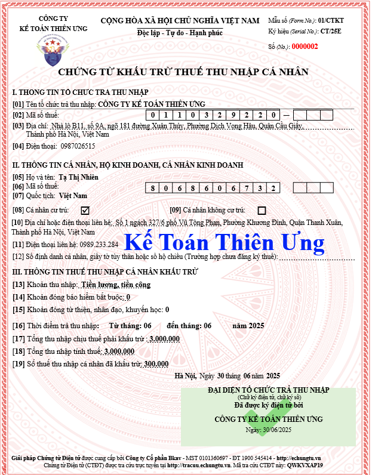

Chứng từ khấu trừ thuế TNCN là chứng từ dùng để ghi nhận thông tin về khoản thuế TNCN mà tổ chức chi trả thu nhập (doanh nghiệp) đã khấu trừ của cá nhân người lao động theo quy định.
Chứng từ là tài liệu dùng để ghi nhận thông tin về các khoản thuế khấu trừ, các khoản thu thuế, phí và lệ phí thuộc ngân sách nhà nước theo quy định của pháp luật quản lý thuế. Chứng từ theo quy định tại Nghị định này bao gồm chứng từ khấu trừ thuế thu nhập cá nhân, biên lai thuế, phí, lệ phí được thể hiện theo hình thức điện tử hoặc đặt in, tự in.
Chứng từ điện tử được thể hiện ở dạng dữ liệu điện tử do tổ chức, cá nhân có trách nhiệm khấu trừ thuế cấp cho người nộp thuế hoặc do tổ chức thu thuế, phí, lệ phí cấp cho người nộp bằng phương tiện điện tử theo quy định của pháp luật phí, lệ phí, pháp luật thuế.
Bắt đầu từ ngày 01/06/2025, việc sử dụng chứng từ khấu trừ thuế TNCN sẽ được thực hiện theo quy định mới đó là :
+ Nghị định 70/2025/NĐ-CP sửa đổi Nghị định 123/2020/NĐ-CP ngày 19/10/2020 quy định về hóa đơn, chứng từ.
Nghị định 70/2025/NĐ-CP ban hàng ngày 20/03/2025 và có hiệu lực từ ngày 01/06/2025
+ Thông tư 32/2025/TT-BTC hướng dẫn thực hiện một số điều của Luật Quản lý thuế 2019, Nghị định 123/2020/NĐ-CP quy định về hóa đơn, chứng từ, Nghị định 70/2025/NĐ-CP sửa đổi, bổ sung một số điều của Nghị định 123/2020/NĐ-CP .
Thông tư 32/2025/TT-BTC ban hành ngày 31/05/2025, có hiệu lực từ ngày 01/6/2025 và thay thế Thông tư số 78/2021/TT-BTC
Đặc biệt chú ý:
Theo khoản 2, điều 12 của Thông tư 32/2025/TT-BT thì:
Kể từ thời điểm Nghị định số 70/2025/NĐ-CP ngày 20/3/2025 của Chính phủ có hiệu lực thi hành, tổ chức khấu trừ thuế thu nhập cá nhân phải ngừng sử dụng chứng từ khấu trừ thuế thu nhập cá nhân điện tử đã thực hiện theo các quy định trước đây và chuyển sang áp dụng chứng từ khấu trừ thuế thu nhập cá nhân điện tử theo quy định tại Nghị định số 70/2025/NĐ-CP ngày 20/3/2025 của Chính phủ.
Đối với chứng từ khấu trừ thuế thu nhập cá nhân đã thực hiện theo các quy định trước đây phát hiện chứng từ khấu trừ thuế thu nhập cá nhân đã lập sai sau khi áp dụng Nghị định số 70/2025/NĐ-CP thì lập chứng từ khấu trừ thuế thu nhập cá nhân điện tử mới thay thế cho chứng từ khấu trừ thuế thu nhập cá nhân đã lập sai.
Vậy là: Bắt đầu từ ngày 01/06/2025 trở đi, doanh nghiệp phải ngừng sử dụng Chứng từ khấu trừ thuế thu nhập cá nhân điện tử đã thực hiện theo các quy định trước đây
=> Doanh nghiệp phải chuyển sang áp dụng chứng từ khấu trừ thuế thu nhập cá nhân điện tử theo quy định tại Nghị định số 70/2025/NĐ-CP từ ngày 01/06/2025
1. Đăng ký sử dụng chứng từ khấu trừ thuế TNCN điện tử
Theo quy định tại Điểm a Khoản 3 Điều 1 Nghị định 70/2025/NĐ-CP Sửa đổi, bổ sung khoản 3 Điều 4 của Nghị định số 123/2020/NĐ-CP thì:
3. Trước khi sử dụng hóa đơn, chứng từ, doanh nghiệp, tổ chức kinh tế, tổ chức khác, hộ kinh doanh, cá nhân kinh doanh, tổ chức, cá nhân khấu trừ thuế thu nhập cá nhân, tổ chức thu thuế, phí, lệ phí, phải thực hiện đăng ký sử dụng với cơ quan thuế hoặc thực hiện thông báo phát hành theo quy định tại Điều 15, Điều 34 và khoản 1 Điều 36 Nghị định này.
=> Vậy là: kể từ ngày 01/06/2025 trở đi, trước khi sử dụng chứng từ khấu trừ thuế TNCN doanh nghiệp phải thực hiện đăng ký sử dụng với cơ quan thuế.
=> Vậy là: kể từ ngày 01/06/2025 trở đi, trước khi sử dụng chứng từ khấu trừ thuế TNCN doanh nghiệp phải thực hiện đăng ký sử dụng với cơ quan thuế.
Theo quy định Khoản 21 Điều 1 Nghị định 70/2025/NĐ-CP Theo quy định tại Điểm a Khoản 3 Điều 1 Nghị định 70/2025/NĐ-CP Sửa đổi tên Điều 34 và sửa đổi, bổ sung Điều 34 của Nghị định số 123/2020/NĐ-CP thì:
1. Tổ chức, cá nhân khấu trừ thuế thu nhập cá nhân, khấu trừ thuế đối với hoạt động kinh doanh trên nền tảng thương mại điện tử, nền tảng số, tổ chức thu các khoản thuế, phí, lệ phí trước khi sử dụng chứng từ điện tử theo khoản 1 Điều 30 Nghị định này thì thực hiện đăng ký sử dụng qua Cổng thông tin điện tử của Tổng cục Thuế, Tổng cục Hải quan hoặc tổ chức cung cấp dịch vụ hóa đơn điện tử.
Trường hợp tổ chức, cá nhân trả thu nhập không thuộc đối tượng áp dụng hóa đơn điện tử; tổ chức, cá nhân trả thu nhập sử dụng hóa đơn điện tử có mã của cơ quan thuế không phải trả tiền dịch vụ theo quy định tại khoản 11 Điều 1 Nghị định này thì được lựa chọn đăng ký sử dụng chứng từ khấu trừ thuế thu nhập cá nhân điện tử thông qua Cổng thông tin điện tử của Tổng cục Thuế hoặc tổ chức cung cấp dịch vụ hóa đơn điện tử được Tổng cục Thuế ủy thác cung cấp dịch vụ chứng từ khấu trừ thuế thu nhập cá nhân điện tử không phải trả tiền dịch vụ.
Nội dung thông tin đăng ký theo Mẫu số 01/ĐKTĐ-CTĐT Phụ lục IA ban hành kèm theo Nghị định này.
Các bạn có thể xem và tải Mẫu số 01/ĐKTĐ-CTĐT theo nghị định 70/2025/NĐ-CP về tại đây: Mẫu tờ khai đăng ký sử dụng chứng từ điện tử số 01/ĐKTĐ-CTĐT theo NĐ 70
Cổng thông tin điện tử của Tổng cục Thuế, Tổng cục Hải quan gửi thông báo theo Mẫu số 01/TB-TNĐT Phụ lục IB ban hành kèm theo Nghị định này về việc tiếp nhận đăng ký sử dụng chứng từ điện tử qua tổ chức cung cấp dịch vụ hóa đơn điện tử đối với trường hợp đăng ký sử dụng chứng từ điện tử thông qua tổ chức cung cấp dịch vụ hóa đơn điện tử.
Cổng thông tin điện tử của Tổng cục Thuế, Tổng cục Hải quan gửi thông báo điện tử theo Mẫu số 01/TB-TNĐT Phụ lục IB ban hành kèm theo Nghị định này về việc tiếp nhận đăng ký sử dụng chứng từ điện tử cho tổ chức, cá nhân khấu trừ thuế, tổ chức thu các khoản phí, lệ phí, qua địa chỉ thư điện tử đã đăng ký với cơ quan thuế đối với trường hợp đăng ký sử dụng chứng từ điện tử trực tiếp tại Cổng thông tin điện tử của Tổng cục Thuế, Tổng cục Hải quan.
2. Trong thời gian 01 ngày làm việc kể từ ngày nhận được đăng ký sử dụng chứng từ điện tử, cơ quan quản lý thuế có trách nhiệm gửi Thông báo điện tử theo Mẫu số 01/TB-ĐKĐT Phụ lục IB ban hành kèm theo Nghị định này qua tổ chức cung cấp dịch vụ hóa đơn điện tử và gửi thông báo điện tử trực tiếp đến tổ chức, cá nhân khấu trừ thuế; tổ chức thu các khoản phí, lệ phí về việc chấp nhận hoặc không chấp nhận đăng ký sử dụng chứng từ điện tử.
3. Kể từ thời điểm cơ quan quản lý thuế chấp nhận đăng ký sử dụng chứng từ điện tử theo quy định tại Nghị định này, tổ chức nêu tại khoản 1 Điều này phải ngừng sử dụng chứng từ điện tử đã thực hiện theo các quy định trước đây, tiêu hủy những chứng từ giấy còn tồn chưa sử dụng (nếu có) theo quy định.
4. Trường hợp có thay đổi thông tin đã đăng ký sử dụng chứng từ điện tử tại khoản 1 Điều này, tổ chức, cá nhân khấu trừ thuế, tổ chức thu thuế, phí, lệ phí thuộc ngân sách nhà nước thực hiện thay đổi thông tin và gửi lại cơ quan quản lý thuế theo Mẫu số 01/ĐKTĐ-CTĐT Phụ lục IA ban hành kèm theo Nghị định này qua Cổng thông tin điện tử của Tổng cục Thuế, Tổng cục Hải quan hoặc qua tổ chức cung cấp dịch vụ hóa đơn điện tử, Cổng thông tin điện tử của Tổng cục Thuế, Tổng cục Hải quan tiếp nhận mẫu đăng ký thay đổi thông tin và cơ quan quản lý thuế thực hiện theo quy định tại khoản 2 Điều này.
2. Nguyên tắc lập, quản lý, sử dụng chứng từ khấu trừ thuế TNCN
Theo quy định tại Điểm a Khoản 3 Điều 1 Nghị định 70/2025/NĐ-CP Sửa đổi, bổ sung khoản 2 Điều 4 của Nghị định số 123/2020/NĐ-CP thì:
Khi khấu trừ thuế thu nhập cá nhân, khi thu thuế, phí, lệ phí, tổ chức, cá nhân khấu trừ thuế, tổ chức thu thuế, phí, lệ phí phải lập chứng từ khấu trừ thuế, biên lai thu thuế, phí, lệ phí giao cho người có thu nhập bị khấu trừ thuế, người nộp thuế, nộp phí, lệ phí và phải ghi đầy đủ các nội dung theo quy định tại Điều 32 Nghị định này. Trường hợp sử dụng chứng từ điện tử thì phải theo định dạng chuẩn dữ liệu của cơ quan thuế. Trường hợp cá nhân ủy quyền quyết toán thuế thì không cấp chứng từ khấu trừ thuế thu nhập cá nhân.
Đối với cá nhân không ký hợp đồng lao động hoặc ký hợp đồng lao động dưới 03 tháng thì tổ chức, cá nhân trả thu nhập cấp chứng từ khấu trừ thuế cho mỗi lần khấu trừ thuế hoặc cấp một chứng từ khấu trừ cho nhiều lần khấu trừ thuế trong một năm tính thuế khi cá nhân yêu cầu. Đối với cá nhân ký hợp đồng lao động từ 03 tháng trở lên, tổ chức, cá nhân trả thu nhập chỉ cấp cho cá nhân một chứng từ khấu trừ thuế trong một năm tính thuế.
Trước khi sử dụng hóa đơn, chứng từ, doanh nghiệp, tổ chức kinh tế, tổ chức khác, hộ kinh doanh, cá nhân kinh doanh, tổ chức, cá nhân khấu trừ thuế thu nhập cá nhân, tổ chức thu thuế, phí, lệ phí, phải thực hiện đăng ký sử dụng với cơ quan thuế hoặc thực hiện thông báo phát hành theo quy định tại Điều 15, Điều 34 và khoản 1 Điều 36 Nghị định này. Đối với hóa đơn, biên lai do cơ quan thuế đặt in, cơ quan thuế thực hiện thông báo phát hành theo khoản 3 Điều 24 và khoản 2 Điều 36 Nghị định này.
3. Mẫu chứng từ khấu trừ thuế thu nhập cá nhân:
4. Thời điểm lập chứng từ
|
Mẫu số 03/TNCN
CỘNG HÒA XÃ HỘI CHỦ NGHĨA VIỆT NAM
Độc lập - Tự do - Hạnh phúc --------------- CHỨNG TỪ KHẤU TRỪ THUẾ THU NHẬP CÁ NHÂN
I. THÔNG TIN TỔ CHỨC TRẢ THU NHẬP [01] Tên tổ chức trả thu nhập: ……………………………………………… [02] Mã số thuế: ........................................................................................ [03] Địa chỉ: ................................................................................................ [04] Điện thoại: .......................................................................................... II. THÔNG TIN CÁ NHÂN, HỘ KINH DOANH, CÁ NHÂN KINH DOANH [05] Họ và tên: ............................................................................................ [06] Mã số thuế: .......................................................................................... [07] Quốc tịch: ............................................................................................. [08] Cá nhân cư trú [09] Cá nhân không cư trú [10] Địa chỉ: ................................................................................................. [11] Điện thoại liên hệ: ................................................................................ [12] Số định danh cá nhân, giấy tờ tùy thân hoặc số hộ chiếu (Trường hợp chưa đăng ký thuế): ........................................................................................................... III. THÔNG TIN THUẾ THU NHẬP CÁ NHÂN KHẤU TRỪ [13] Khoản thu nhập: [14] Khoản đóng bảo hiểm bắt buộc [15] Khoản đóng từ thiện, nhân đạo, khuyến học: [16] Thời điểm trả thu nhập: Từ tháng: ...........đến tháng: .............năm. [17] Tổng thu nhập chịu thuế phải khấu trừ: [18] Tổng thu nhập tính thuế: [19] Số thuế thu nhập cá nhân đã khấu trừ:
|
(Đây là Mẫu số 03/TNCN Chứng từ khấu trừ thuế thu nhập cá nhân Sửa đổi, bổ sung được ban hành Kèm theo Nghị định số 70/2025/NĐ-CP ngày 20 tháng 3 năm 2025 của Chính phủ)

4. Thời điểm lập chứng từ
Theo Khoản 3 Điều 1 Nghị định 70/2025/NĐ-CP thì:
Tại thời điểm khấu trừ thuế thu nhập cá nhân, thời điểm thu thuế, phí, lệ phí, tổ chức khấu trừ thuế thu nhập cá nhân, tổ chức thu thuế, phí, lệ phí, phải lập chứng từ, biên lai giao cho người có thu nhập bị khấu trừ thuế, người nộp các khoản thuế, phí, lệ phí.
Thời điểm ký số trên chứng từ là thời điểm tổ chức, cá nhân khấu trừ thuế thu nhập cá nhân, tổ chức thu thuế, phí, lệ phí điện tử sử dụng chữ ký số để ký trên chứng từ điện tử được hiển thị theo định dạng ngày, tháng, năm của năm dương lịch.
Theo Điểm a Khoản 3 Điều 1 Nghị định 70/2025/NĐ-CP thì:
Đối với cá nhân không ký hợp đồng lao động hoặc ký hợp đồng lao động dưới 03 tháng thì tổ chức, cá nhân trả thu nhập cấp chứng từ khấu trừ thuế cho mỗi lần khấu trừ thuế hoặc cấp một chứng từ khấu trừ cho nhiều lần khấu trừ thuế trong một năm tính thuế khi cá nhân yêu cầu. Đối với cá nhân ký hợp đồng lao động từ 03 tháng trở lên, tổ chức, cá nhân trả thu nhập chỉ cấp cho cá nhân một chứng từ khấu trừ thuế trong một năm tính thuế.
5. Nội dung trên chứng từ khấu trừ thuế thu nhập cá nhân
Theo Khoản 18 Điều 1 Nghị định 70/2025/NĐ-CP thì:
Theo Khoản 18 Điều 1 Nghị định 70/2025/NĐ-CP thì:
a) Tên chứng từ khấu trừ thuế; ký hiệu mẫu chứng từ khấu trừ thuế, ký hiệu chứng từ khấu trừ thuế, số thứ tự chứng từ khấu trừ thuế;
b) Tên, địa chỉ, mã số thuế của tổ chức, cá nhân chi trả thu nhập;
c) Tên, địa chỉ, số điện thoại, mã số thuế của cá nhân nhận thu nhập (nếu cá nhân đã có mã số thuế) hoặc số định danh cá nhân;
d) Quốc tịch (nếu người nộp thuế không thuộc quốc tịch Việt Nam);
đ) Khoản thu nhập, thời điểm trả thu nhập, tổng thu nhập chịu thuế, khoản đóng bảo hiểm bắt buộc; khoản từ thiện, nhân đạo, khuyến học; số thuế đã khấu trừ;
e) Ngày, tháng, năm lập chứng từ khấu trừ thuế;
g) Họ tên, chữ ký của người trả thu nhập.
Trường hợp sử dụng chứng từ khấu trừ thuế thu nhập cá nhân điện tử thì chữ ký trên chứng từ điện tử là chữ ký số.
6. Mẫu ký hiệu trên chứng từ khấu trừ thuế thu nhập cá nhân điện tử
Theo Phụ lục II.A Ban hành kèm theo Thông tư số 32/2025/TT-BTC ngày 31 tháng 05 năm 2025 của Bộ trưởng Bộ Tài chính thì:
Theo Phụ lục II.A Ban hành kèm theo Thông tư số 32/2025/TT-BTC ngày 31 tháng 05 năm 2025 của Bộ trưởng Bộ Tài chính thì:
1. Ký hiệu mẫu chứng từ khấu trừ thuế thu nhập cá nhân gồm có 07 ký tự là 01/CTKT.
2. Ký hiệu chứng từ khấu trừ thuế thu nhập cá nhân gồm 06 ký tự gồm cả chữ viết và chữ số được quy định như sau:
+ Hai chữ đầu “CT/” là chữ viết tắt của chứng từ;
+ Hai ký tự tiếp theo là hai (02) chữ số Ả-rập thể hiện năm lập chứng từ khấu trừ thuế thu nhập cá nhân điện tử được xác định theo 2 chữ số cuối của năm dương lịch.
+ Chữ cuối là chữ “E” thể hiện hình thức chứng từ là điện tử
Ví dụ: CT/25E: Chứng từ khấu trừ thuế thu nhập cá nhân điện tử lập và cấp cho người nộp thuế trong năm 2025.
- Số chứng từ khấu trừ thuế thu nhập cá nhân điện tử là số thứ tự được thể hiện trên chứng từ khấu trừ thuế thu nhập cá nhân điện tử. Số chứng từ khấu trừ thuế thu nhập cá nhân điện tử được ghi bằng chữ số Ả-rập có tối đa 7 chữ số bắt đầu từ số 1 vào ngày 01 tháng 01 hoặc ngày bắt đầu sử dụng chứng từ khấu trừ thuế thu nhập cá nhân điện tử và kết thúc vào ngày 31 tháng 12 hàng năm.
- Tại bản thể hiện, ký hiệu mẫu, ký hiệu chứng từ khấu trừ thuế thu nhập cá nhân điện tử và số chứng từ khấu trừ thuế thu nhập cá nhân điện tử được thể hiện ở phía trên bên phải của chứng từ khấu trừ thuế thu nhập cá nhân (hoặc ở vị trí dễ nhận biết).
Mẫu chứng từ khấu trừ thuế TNCN mới nhất hiện nay là Mẫu 03/TNCN được ban hành kèm theo Nghị định số 70/2025/NĐ-CP ngày 20 tháng 3 năm 2025
7. Cách lập chứng từ khấu trừ thuế TNCN:
I. Thông tin tổ chức cá nhân trả thu nhập:
[01] Tên tổ chức, cá nhân trả thu nhập: Ghi tên công ty theo Quyết định thành lập hoặc Giấy chứng nhận đăng ký kinh doanh
[02] Mã số thuế: Ghi đầy đủ mã số thuế của tổ chức, cá nhân trả thu nhập như trên Giấy chứng nhận đăng ký thuế hoặc Thông báo mã số thuế do cơ quan thuế cấp.
[03] Địa chỉ: Ghi đúng theo địa chỉ đã đăng ký trong Giấy chứng nhận đăng ký kinh doanh
[04] Điện thoại: ghi số điện thoại để thuận tiện cho việc liên hệ giữa cơ quan thuế và người nộp thuế
II. Thông tin người nộp thuế
[05] Họ và tên người nộp thuế: Ghi theo tên trong Chứng minh nhân dân hoặc hộ chiếu.
[06] Mã số thuế: Ghi đầy đủ mã số thuế của người nộp thuế như trên Thông báo mã số thuế do cơ quan thuế cấp
[07] Quốc tịch: khai trong trường hợp không phải quốc tịch Việt Nam
[08] Cá nhân cư trú: Đánh dấu (x) vào ô nếu người nộp thuế là cá nhân cư trú
[09] Cá nhân không cư trú: Đánh dấu (x) vào ô nếu người nộp thuế là cá nhân không cư trú
[10] Địa chỉ hoặc điện thoại liên hệ: Ghi số địa chỉ hoặc điện thoại phục vụ cho liên hệ giữa cơ quan thuế và người nộp thuế
[11] Số chứng minh thư nhân dân (CMND): khai trong trường hợp mang quốc tịch Việt nam; Số Hộ chiếu: khai trong trường hợp không mang quốc tịch Việt nam
[12] Nơi cấp: (tỉnh/thành phố đối với số CMND); (quốc gia đối với hộ chiếu)
[13] Ngày cấp: ghi ngày được cấp trên CMND hoặc hộ chiếu
III. THÔNG TIN THUẾ THU NHẬP CÁ NHÂN KHẤU TRỪ
[14] Khoản thu nhập: ghi rõ loại thu nhập cá nhân nhận được như: thu nhập từ tiền lương, tiền công, từ kinh doanh, từ đầu tư vốn…
[14a] Khoản đóng bảo hiểm bắt buộc: Nếu người lao động có tham gia bảo hiểm bắt buộc tại đơn vị thì ghi số tiền bảo hiểm bắt buộc đã bị trừ vào lương, được tính giảm trừ khi tính thuế TNCN vào đây
[15] Thời điểm trả thu nhập: là thời điểm tổ chức, cá nhân trả thu nhập của tháng trong năm dương lịch. Trường hợp chi trả thu nhập trong khoảng thời gian thì phải ghi từ tháng nào đến tháng nào.
[16] Tổng thu nhập chịu thuế phải khấu trừ: ghi tổng số thu nhập chịu thuế phải khấu trừ mà tổ chức, cá nhân đã trả cho cá nhân NLĐ (chưa có các khoản đóng góp hay giảm trừ gia cảnh).
[17] Tổng thu nhập tính thuế: Ghi tổng thu nhập tính thuế
[18] Số thuế thu nhập cá nhân đã khấu trừ: là số thuế thu nhập mà tổ chức, cá nhân đã khấu trừ của cá nhân.
* Lưu ý:
Theo quy định tại điều 25 của thông tư 111/2013/TT-BTC thì việc Cấp chứng từ khấu trừ thuế TNCN trong một số trường hợp cụ thể như sau:
1) Đối với cá nhân không ký hợp đồng lao động hoặc ký hợp đồng lao động dưới ba (03) tháng: cá nhân có quyền yêu cầu tổ chức, cá nhân trả thu nhập cấp chứng từ khấu trừ cho mỗi lần khấu trừ thuế hoặc cấp một chứng từ khấu trừ cho nhiều lần khấu trừ thuế trong một kỳ tính thuế.
Lưu ý: Cụm từ “trong một kỳ tính thuế” tức là “trong 1 năm dương lịch” (Thuế TNCN có kỳ tính thuế theo năm dương lịch): Trên 1 chứng từ khấu trừ thuế TNCN không được viết cho thu nhập của từ 2 năm dương lịch trở lên. Nếu thu nhập của NLĐ đó liên quan đến từ 2 năm dương lịch trở lên (Như ví dụ 2) thì phải tách thu nhập của các năm đó ra thành các chứng từ khác nhau
7. Cách lập chứng từ khấu trừ thuế TNCN:
I. Thông tin tổ chức cá nhân trả thu nhập:
[01] Tên tổ chức, cá nhân trả thu nhập: Ghi tên công ty theo Quyết định thành lập hoặc Giấy chứng nhận đăng ký kinh doanh
[02] Mã số thuế: Ghi đầy đủ mã số thuế của tổ chức, cá nhân trả thu nhập như trên Giấy chứng nhận đăng ký thuế hoặc Thông báo mã số thuế do cơ quan thuế cấp.
[03] Địa chỉ: Ghi đúng theo địa chỉ đã đăng ký trong Giấy chứng nhận đăng ký kinh doanh
[04] Điện thoại: ghi số điện thoại để thuận tiện cho việc liên hệ giữa cơ quan thuế và người nộp thuế
II. Thông tin người nộp thuế
[05] Họ và tên người nộp thuế: Ghi theo tên trong Chứng minh nhân dân hoặc hộ chiếu.
[06] Mã số thuế: Ghi đầy đủ mã số thuế của người nộp thuế như trên Thông báo mã số thuế do cơ quan thuế cấp
[07] Quốc tịch: khai trong trường hợp không phải quốc tịch Việt Nam
[08] Cá nhân cư trú: Đánh dấu (x) vào ô nếu người nộp thuế là cá nhân cư trú
[09] Cá nhân không cư trú: Đánh dấu (x) vào ô nếu người nộp thuế là cá nhân không cư trú
[10] Địa chỉ hoặc điện thoại liên hệ: Ghi số địa chỉ hoặc điện thoại phục vụ cho liên hệ giữa cơ quan thuế và người nộp thuế
[11] Số chứng minh thư nhân dân (CMND): khai trong trường hợp mang quốc tịch Việt nam; Số Hộ chiếu: khai trong trường hợp không mang quốc tịch Việt nam
[12] Nơi cấp: (tỉnh/thành phố đối với số CMND); (quốc gia đối với hộ chiếu)
[13] Ngày cấp: ghi ngày được cấp trên CMND hoặc hộ chiếu
III. THÔNG TIN THUẾ THU NHẬP CÁ NHÂN KHẤU TRỪ
[14] Khoản thu nhập: ghi rõ loại thu nhập cá nhân nhận được như: thu nhập từ tiền lương, tiền công, từ kinh doanh, từ đầu tư vốn…
[14a] Khoản đóng bảo hiểm bắt buộc: Nếu người lao động có tham gia bảo hiểm bắt buộc tại đơn vị thì ghi số tiền bảo hiểm bắt buộc đã bị trừ vào lương, được tính giảm trừ khi tính thuế TNCN vào đây
[15] Thời điểm trả thu nhập: là thời điểm tổ chức, cá nhân trả thu nhập của tháng trong năm dương lịch. Trường hợp chi trả thu nhập trong khoảng thời gian thì phải ghi từ tháng nào đến tháng nào.
Ví dụ: cơ quan trả thu nhập trả cho cá nhân thu nhập của cả năm 2025 ghi: “tháng 1 đến tháng 12”.
Trường hợp chi trả thu nhập trong các tháng liền nhau Ví dụ như 7, 8, 9 thì ghi “tháng 7 đến tháng 9”.
Trường hợp chi trả thu nhập trong các tháng liền nhau Ví dụ như 7, 8, 9 thì ghi “tháng 7 đến tháng 9”.
Trường hợp chi trả thu nhập trong các tháng không liền nhau là 7, 9 thì ghi “7; 9”.
[16] Tổng thu nhập chịu thuế phải khấu trừ: ghi tổng số thu nhập chịu thuế phải khấu trừ mà tổ chức, cá nhân đã trả cho cá nhân NLĐ (chưa có các khoản đóng góp hay giảm trừ gia cảnh).
Tổng thu nhập chịu thuế = Tổng Thu nhập - các khoản được miễn thuế
[17] Tổng thu nhập tính thuế: Ghi tổng thu nhập tính thuế
Tổng Thu nhập tính thuế = Tổng Thu nhập chị thuế - Tổng các khoản giảm trừ
[18] Số thuế thu nhập cá nhân đã khấu trừ: là số thuế thu nhập mà tổ chức, cá nhân đã khấu trừ của cá nhân.
Để hiểu hơn về chỉ tiêu số 16, 17 và 18 thì các bạn xem tại đây: Cách tính thuế TNCN
* Lưu ý:
Theo quy định tại điều 25 của thông tư 111/2013/TT-BTC thì việc Cấp chứng từ khấu trừ thuế TNCN trong một số trường hợp cụ thể như sau:
1) Đối với cá nhân không ký hợp đồng lao động hoặc ký hợp đồng lao động dưới ba (03) tháng: cá nhân có quyền yêu cầu tổ chức, cá nhân trả thu nhập cấp chứng từ khấu trừ cho mỗi lần khấu trừ thuế hoặc cấp một chứng từ khấu trừ cho nhiều lần khấu trừ thuế trong một kỳ tính thuế.
Ví dụ 1: Ông Quang Hưng ký hợp đồng dịch vụ với công ty X để chăm sóc cây cảnh tại khuôn viên của Công ty theo lịch một tháng một lần trong thời gian từ tháng 9/2024 đến tháng 4/2025. Thu nhập của ông Q được Công ty thanh toán theo từng tháng với số tiền là 03 triệu đồng. Như vậy, trường hợp này ông Q có thể yêu cầu Công ty cấp chứng từ khấu trừ theo từng tháng hoặc cấp một chứng từ phản ánh số thuế đã khấu trừ từ tháng 9 đến tháng 12/2024 và một chứng từ cho thời gian từ tháng 01 đến tháng 04/2025.
2) Đối với cá nhân ký hợp đồng lao động từ ba (03) tháng trở lên: tổ chức, cá nhân trả thu nhập chỉ cấp cho cá nhân một chứng từ khấu trừ trong một kỳ tính thuế.
Ví dụ 2: Ông Thanh Phong ký hợp đồng lao động dài hạn (từ tháng 9/2024 đến tháng hết tháng 8/2025) với công ty Y. Trong trường hợp này, nếu ông R thuộc đối tượng phải quyết toán thuế trực tiếp với cơ quan thuế và có yêu cầu Công ty cấp chứng từ khấu trừ thì Công ty sẽ thực hiện cấp 01 chứng từ phản ánh số thuế đã khấu trừ từ tháng 9 đến hết tháng 12/2024 và 01 chứng từ cho thời gian từ tháng 01 đến hết tháng 8/2025.
Lưu ý: Cụm từ “trong một kỳ tính thuế” tức là “trong 1 năm dương lịch” (Thuế TNCN có kỳ tính thuế theo năm dương lịch): Trên 1 chứng từ khấu trừ thuế TNCN không được viết cho thu nhập của từ 2 năm dương lịch trở lên. Nếu thu nhập của NLĐ đó liên quan đến từ 2 năm dương lịch trở lên (Như ví dụ 2) thì phải tách thu nhập của các năm đó ra thành các chứng từ khác nhau
--------------------------------------------------------------------------------------
8. Xử lý chứng từ điện tử đã lập
Theo Khoản 22 Điều 1 Nghị định 70/2025/NĐ-CP thì:
Trường hợp chứng từ điện tử đã lập sai thì tổ chức khấu trừ thuế thực hiện xử lý chứng từ điện tử đã lập theo nguyên tắc tương tự xử lý hóa đơn điện tử đã lập quy định tại Điều 19 Nghị định này. Thông báo chứng từ đã lập sai theo Mẫu số 04/SS-CTĐT Phụ lục IA ban hành kèm theo Nghị định này.
Trường hợp chứng từ điện tử đã lập sai thì tổ chức khấu trừ thuế thực hiện xử lý chứng từ điện tử đã lập theo nguyên tắc tương tự xử lý hóa đơn điện tử đã lập quy định tại Điều 19 Nghị định này. Thông báo chứng từ đã lập sai theo Mẫu số 04/SS-CTĐT Phụ lục IA ban hành kèm theo Nghị định này.
Các bạn có thể xem và tải Mẫu số 04/SS-CTĐT theo nghị định 70/2025/NĐ-CP về tại đây: Mẫu 04/SS-CTĐT thông báo chứng từ điện tử đã lập sai theo NĐ 70
Còn Điều 19 Nghị định này => Là quy định về các xử lý hóa đơn điện tử lập sai
(Từ ngày 01/06/2025 trở đi, Khi phát hiện ra chứng từ khấu trừ thuế TNCN có sai sót thì các bạn cũng sẽ xử lý sai sót đó giống với hóa đơn là lập chứng từ điều chỉnh hoặc chứng từ thay thế
Chi tiết các bạn xem tại đây: Cách xử lý hóa đơn sai sót theo Nghị định 70/2025
(Từ ngày 01/06/2025 trở đi, Khi phát hiện ra chứng từ khấu trừ thuế TNCN có sai sót thì các bạn cũng sẽ xử lý sai sót đó giống với hóa đơn là lập chứng từ điều chỉnh hoặc chứng từ thay thế
Chi tiết các bạn xem tại đây: Cách xử lý hóa đơn sai sót theo Nghị định 70/2025
Theo khoản 2, điều 12 của Thông tư 32/2025/TT-BT thì:
Đối với chứng từ khấu trừ thuế thu nhập cá nhân đã thực hiện theo các quy định trước đây phát hiện chứng từ khấu trừ thuế thu nhập cá nhân đã lập sai sau khi áp dụng Nghị định số 70/2025/NĐ-CP thì lập chứng từ khấu trừ thuế thu nhập cá nhân điện tử mới thay thế cho chứng từ khấu trừ thuế thu nhập cá nhân đã lập sai.
Theo Khoản 22 Điều 1 Nghị định 70/2025/NĐ-CP thì:
1. Quản lý tên và mật khẩu của các tài khoản đã được cơ quan quản lý thuế cấp.
2. Tạo lập chứng từ khấu trừ thuế thu nhập cá nhân điện tử, biên lai thu thuế, phí, lệ phí điện tử để gửi đến người bị khấu trừ thuế thu nhập cá nhân, người nộp các khoản thuế, phí, lệ phí và chịu trách nhiệm trước pháp luật về tính hợp pháp, chính xác của chứng từ điện tử đã lập.
3. Chuyển dữ liệu chứng từ điện tử đến cơ quan quản lý thuế
a) Chuyển dữ liệu chứng từ khấu trừ thuế thu nhập cá nhân điện tử
Tổ chức, cá nhân khấu trừ thuế sau khi lập đầy đủ các nội dung trên chứng từ khấu trừ thuế thu nhập cá nhân điện tử gửi cho người bị khấu trừ thuế và đồng thời gửi cho cơ quan thuế ngay trong ngày lập chứng từ.
Tổ chức, cá nhân khấu trừ thuế thực hiện chuyển dữ liệu chứng từ khấu trừ thuế thu nhập cá nhân điện tử đến cơ quan thuế theo định dạng dữ liệu theo quy định tại Điều 33 Nghị định này qua tổ chức cung cấp dịch vụ hóa đơn điện tử; tổ chức khấu trừ thuế thu nhập cá nhân là tổ chức kết nối chuyển dữ liệu hóa đơn điện tử theo hình thức gửi trực tiếp đến cơ quan thuế thì chuyển dữ liệu chứng từ khấu trừ thuế thu nhập cá nhân qua Cổng thông tin điện tử của Tổng cục Thuế; tổ chức, cá nhân trả thu nhập không thuộc đối tượng áp dụng hóa đơn điện tử và tổ chức, cá nhân trả thu nhập sử dụng hóa đơn điện tử có mã của cơ quan thuế không phải trả tiền dịch vụ theo quy định tại khoản 10 Điều 1 Nghị định này thì được lựa chọn chuyển dữ liệu chứng từ khấu trừ thuế thu nhập cá nhân điện tử thông qua Cổng thông tin điện tử của Tổng cục Thuế hoặc tổ chức cung cấp dịch vụ hóa đơn điện tử được Tổng cục Thuế ủy thác cung cấp dịch vụ chứng từ khấu trừ thuế thu nhập cá nhân điện tử.
b) Tổ chức thu thuế, phí, lệ phí gửi báo cáo tình hình sử dụng biên lai theo Mẫu số BC26/BLĐT Phụ lục IA ban hành kèm theo Nghị định này để gửi cơ quan quản lý thuế cùng với thời gian gửi Tờ khai phí, lệ phí (trừ phí hải quan; lệ phí hàng hoá, hành lý, phương tiện vận tải quá cảnh) theo quy định của Luật Quản lý thuế số 38/2019/QH14 và các văn bản hướng dẫn thi hành.
4. Lưu trữ và bảo đảm tính toàn vẹn của toàn bộ chứng từ điện tử; thực hiện các quy định pháp luật về bảo đảm an toàn, an ninh hệ thống dữ liệu điện tử.
5. Chấp hành sự thanh tra, kiểm tra, đối chiếu của cơ quan quản lý thuế và các cơ quan có thẩm quyền theo quy định của pháp luật.
10. Chuyển đổi hóa đơn điện tử, chứng từ điện tử thành hóa đơn, chứng từ giấy
Theo điều 7 của nghị định 123/2020/NĐ-CP thì:
1. Hóa đơn điện tử, chứng từ điện tử hợp pháp được chuyển đổi thành hóa đơn, chứng từ giấy khi có yêu cầu nghiệp vụ kinh tế, tài chính phát sinh hoặc theo yêu cầu của cơ quan quản lý thuế, cơ quan kiểm toán, thanh tra, kiểm tra, điều tra và theo quy định của pháp luật về thanh tra, kiểm tra và điều tra.
2. Việc chuyển đổi hóa đơn điện tử, chứng từ điện tử thành hóa đơn, chứng từ giấy phải bảo đảm sự khớp đúng giữa nội dung của hóa đơn điện tử, chứng từ điện tử và hóa đơn, chứng từ giấy sau khi chuyển đổi.
3. Hóa đơn điện tử, chứng từ điện tử được chuyển đổi thành hóa đơn, chứng từ giấy thì hóa đơn, chứng từ giấy chỉ có giá trị lưu giữ để ghi sổ, theo dõi theo quy định của pháp luật về kế toán, pháp luật về giao dịch điện tử, không có hiệu lực để giao dịch, thanh toán, trừ trường hợp hóa đơn được khởi tạo từ máy tính tiền có kết nối chuyển dữ liệu điện tử với cơ quan thuế theo quy định tại Nghị định này.
11. Định dạng chứng từ điện tử
Theo Khoản 20 Điều 1 Nghị định 70/2025/NĐ-CP thì:
Theo Khoản 20 Điều 1 Nghị định 70/2025/NĐ-CP thì:
1. Các loại chứng từ quy định tại khoản 1 Điều 30 Nghị định này phải thực hiện theo định dạng sau:
a) Định dạng chứng từ điện tử sử dụng ngôn ngữ định dạng văn bản XML (XML là chữ viết tắt của cụm từ tiếng Anh "eXtensible Markup Language" được tạo ra với mục đích chia sẻ dữ liệu điện tử giữa các hệ thống công nghệ thông tin);
b) Định dạng chứng từ điện tử gồm hai thành phần: thành phần chứa dữ liệu nghiệp vụ chứng từ điện tử và thành phần chứa dữ liệu chữ ký số;
c) Tổng cục Thuế, Tổng cục Hải quan xây dựng và công bố thành phần chứa dữ liệu nghiệp vụ chứng từ điện tử, thành phần chứa dữ liệu chữ ký số và cung cấp công cụ hiển thị các nội dung của chứng từ điện tử theo quy định tại Nghị định này.
2. Chứng từ điện tử phải được hiển thị đầy đủ, chính xác các nội dung của chứng từ đảm bảo không dẫn tới cách hiểu sai lệch để người sử dụng có thể đọc được bằng phương tiện điện tử.
Ngày 24/6/2025, Cục Thuế ban hành công văn số 1992/CT-CS hướng dẫn sử dụng chứng từ khấu trừ thuế TNCN. Về vấn đề này, Cục Thuế có ý kiến như sau:
Kính gửi: Ông Trần Đình Tân Tại Điều 44 Luật quản lý thuế số 38/2019/QH14 quy định về thời hạn khai quyết toán thuế TNCN của tổ chức trả thu nhập là ngày cuối cùng của tháng thứ 3 kể từ ngày kết thúc năm dương lịch, thời hạn khai quyết toán thuế TNCN của cá nhân trực tiếp quyết toán thuế là ngày cuối cùng của tháng thứ 4 kể từ ngày kết thúc năm dương lịch Tại điểm 9.2 Phụ lục I ban hành tại Nghị định số 126/2020/NĐ-CP ngày 19/10/2020 của Chính phủ quy định thành phần hồ sơ cá nhân khai quyết toán thuế TNCN trực tiếp với cơ quan thuế, trong đó có “Bản sao các chứng từ chứng minh số thuế đã khấu trừ, đã tạm nộp trong năm, số thuế đã nộp ở nước ngoài (nếu có). Trường hợp tổ chức trả thu nhập không cấp chứng từ khấu trừ thuế cho cá nhân do tổ chức trả thu nhập đã chấm dứt hoạt động thì cơ quan thuế căn cứ cơ sở dữ liệu của ngành thuế để xem xét xử lý hồ sơ quyết toán thuế cho cá nhân mà không bắt buộc phải có chứng từ khấu trừ thuế”. Tại khoản 3 Điều 1 Nghị định số 70/2025/NĐCP ngày 20/3/2025 của Chính phủ sửa đổi, bổ sung một số điều của nghị định số 123/2020/NĐ-CP ngày 19/10/2020 của chính phủ quy định về hóa đơn, chứng từ có quy định: “3. Sửa đổi, bổ sung khoản 1, khoản 2, khoản 3, khoản 6, khoản 7 và bổ sung khoản 9 vào Điều 4 như sau ...2. Khi khấu trừ thuế thu nhập cá nhân, ...tổ chức, cá nhân khấu trừ thuế ... phải lập chứng từ khấu trừ ... giao cho người có thu nhập bị khấu trừ thuế, ... Trường hợp sử dụng chứng từ điện tử thì phải theo định dạng chuẩn dữ liệu của cơ quan thuế. Trường hợp cá nhân ủy quyền quyết toán thuế thì không cấp chứng từ khấu trừ thuế thu nhập cá nhân” Tại khoản 22 Điều 1 Nghị định số 70/2025/NĐCP ngày 20/3/2025 của Chính phủ quy định: “22. Bổ sung Điều 34a và Điều 34b vào sau Điều 34 như sau: ... Điều 34b. ... Tổ chức, cá nhân khấu trừ thuế sau khi lập đầy đủ các nội dung trên chứng từ khấu trừ thuế thu nhập cá nhân điện tử gửi cho người bị khấu trừ thuế và đồng thời gửi cho cơ quan thuế ngay trong ngày lập chứng từ” - Tại Điều 3 Nghị định số 70/2025/NĐCP: ngày 20/3/2025 của Chính phủ quy định: “Nghị định này có hiệu lực thi hành từ ngày 01 tháng 6 năm 2025” Tại khoản 2 Điều 25 Thông tư số 111/2013/TT-BTC ngày 15/8/2013 của Bộ Tài chính quy định:
“2. Chứng từ khấu trừ
a) Tổ chức, cá nhân trả các khoản thu nhập đã khấu trừ thuế theo hướng dẫn tại khoản 1, Điều này phải cấp chứng từ, khấu trừ thuế theo yêu cầu của cá nhân bị khấu trừ. Trường hợp cá nhân ủy quyền quyết toán thuế thì không cấp chứng từ khấu trừ. b) Cấp chứng từ khấu trừ trong một số trường hợp cụ thể như sau: b.1) Đối với cá nhân không ký hợp đồng lao động hoặc ký hợp đồng lao động dưới ba (03) tháng: cá nhân có quyền yêu cầu tổ chức, cá nhân trả thu nhập cấp chứng từ khấu trừ cho mỗi lần khấu trừ thuế hoặc cấp một chứng từ khấu trừ cho nhiều lần khấu trừ thuế trong một kỳ tính thuế. b.2) Đối với cá nhân ký hợp đồng lao động: từ ba (03) tháng trở lên: tổ chức, cá nhân trả thu nhập chỉ cấp cho cá nhân một chứng từ khấu trừ trong một kỳ tính thuế” Căn cứ quy định trên, trường hợp cá nhân ủy quyền quyết toán thuế TNCN cho tổ chức trả thu nhập thì tổ chức trả thu nhập không cấp chứng từ khấu trừ thuế TNCN cho người lao động. Trường hợp cá nhân thực hiện quyết toán thuế trực tiếp với cơ quan thuế thì trong hồ sơ quyết toán thuế TNCN có chứng từ khấu trừ thuế để chứng minh số thuế TNCN đã được khấu trừ trong năm. Theo quy định thì thời hạn quyết toán thuế TNCN tiền lương tiền công của cá nhân kết thúc sau thời hạn quyết toán thuế của tổ chức trả thu nhập. Một số trường hợp sau khi kết thúc năm dương lịch cá nhân đã thực hiện quyết toán thuế, trước khi tổ chức trả thu nhập quyết toán thuế TNCN thì hệ thống ngành thuế chưa có đầy đủ thông tin thu nhập, và số thuế TNCN đã khấu trừ của cá nhân. Khi đó chứng từ khấu trừ thuế TNCN là căn cứ để cá nhân thực hiện quyết toán thuế TNCN và là cơ sở để cơ quan thuế đối soát với thông tin kê khai trên hồ sơ khai thuế. Trong trường hợp các tổ chức trả thu nhập đã quyết toán thuế TNCN, thông tin thu nhập, số thuế đã khấu trừ của cá nhân được kê khai đầy đủ lên hệ thống ngành thuế, tổ chức trả thu nhập cấp chứng từ khấu trừ cho cá nhân trực tiếp quyết toán thuế TNCN thì người lao động có sự đối chiếu chéo thông tin thu nhập, số thuế đã khấu trừ giữa tổ chức trả thu nhập và cá nhân người lao động, tránh một số trường hợp doanh nghiệp kê khai sai thu nhập, số thuế đã khấu trừ. Riêng với trường hợp tổ chức trả thu nhập không cấp chứng từ khấu trừ thuế cho cá nhân do tổ chức trả thu nhập đã chấm dứt hoạt động thì cơ quan thuế căn cứ cơ sở dữ liệu của ngành thuế để xem xét xử lý hồ sơ quyết toán thuế cho cá nhân mà không bắt buộc phải có chứng từ khấu trừ thuế. Từ ngày 01/6/2025, việc sử dụng dữ liệu chứng từ khấu trừ thuế thu nhập cá nhân điện tử thực hiện theo quy định tại Nghị định số 70/2025/NĐ-CP ngày 20/3/2025 của Chính phủ và Thông tư số 32/2025/TT-BTC ngày 31/5/2025 của Bộ Tài chính. Cục Thuế thông báo để độc giả Trần Đình Tân được biết./.
|